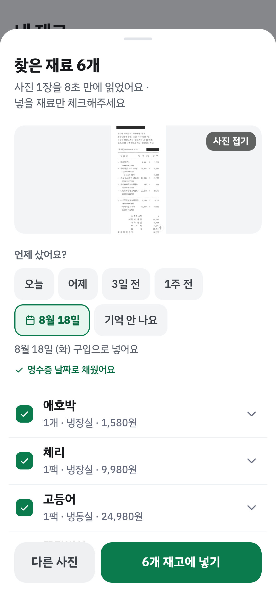

갈무리부엌
재고 관리
사진 한 장으로
재고 넣고,
곧 먹을 재료부터
1
곧 먹을 재료가 맨 위로
D-1, 구입 10일째처럼 먼저 알려줘요
2
사진 여러 장을 한 번에 읽어요
냉장고·영수증을 같이 올리고 구입일만 골라요
3
예시 사진으로 바로 해봐요
로그인 없이도 영수증을 읽고 가격·날짜를 채워줘요
1
2
3

 갈무리부엌
갈무리부엌
 갈무리부엌
갈무리부엌